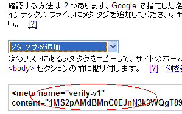
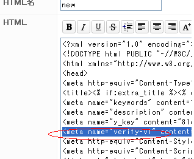
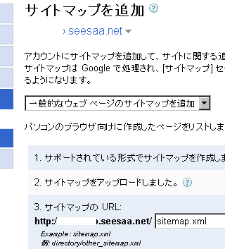
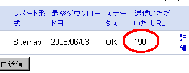

サイトマップの作り方（ウェブマスターツール）
グーグル用のサイトマップを作成したあとは、グーグルウェブマスター ツールを使ってグーグルに送信しておきましょう。サイトマップを送信することにより、検索エンジンがサイトの構造を認識しやすくなり、深い階層のページでも登録されやすくなります。
シーサーブログの場合、管理画面から「サイトマップを出力する」に設定しておけば、一日程度で自動でサイトマップが出来上がります。

この出力されたサイトマップは、サイトのURLに「sitemap.xml」をつけてアクセスすると実際に確認することができます。ここに記載されているURLの一覧を元に、検索エンジンがクロールしてくれますので、自サイトのページが登録されやすくなります。
ウェブマスターツールからサイトマップを送信
単にサイトマップを作成しただけでは認識してくれませんので、サイトマップのURLをウェブマスターツールを使ってグーグルに通知しておきましょう。
①サイトの所有者であることの確認
まず、そのサイトがユーザー本人のものであることを確認してもらいます。確認するにはいくつかの方法がありますが、シーサーブログを使っている場合、発行されたメタタグを追加する方法が簡単です。

ウェブマスターツールで発行されるメタタグをコピペして、自分のブログのHTMLに貼り付けます。
メタタグを貼り付ける場所は「デザイン - HTML」の<head>と</head>で囲まれた箇所です。同じようなメタタグ（meta name="）のあるあたりがよいでしょう。

シーサーブログ側で貼り付けたら保存して、もとのウェブマスターツールのページに戻り確認してもらいます。
②サイトマップのURLを追加して送信
自分のブログであることの確認がすんだら、あとはサイトマップのURLを追加すれば終了です。

サイトマップを送信すれば、送信されたページ数も表示されます。

このサイトマップを送信したとしても、必ずしもすべてのページがインデックスされるわけではありませんが、送信しておいた方がインデックスされやすくなる傾向があります。
- googleサイトマップの作成
googleのサイトマップの作成は早い段階でしておいた方がいいです。 サイトマップにはグーグルやヤフーの検索ロボット用のものと自分のブログの訪問者様用の２種類があります。グーグルなどの検索ロボット用... - サイトエクスプローラー日本版
ヤフーもサイトマップのやつができたようなんで、ちょっと試してみました。 ヤフーのサイトエクスプローラーとかってやつなんですけど、以前アメリカの方のサイトエクスプローラーを使ったきりほったらかし状態だ... - 無料ブログのサイトマップを丁寧の作成
このブログでは無料で利用できるグーグルのアクセス解析のグーグルアナリティクスを利用しています。 このアクセス解析を見てみると、やはりサイトマップのクリック率がどのブログでも高いようです。 このブロ...